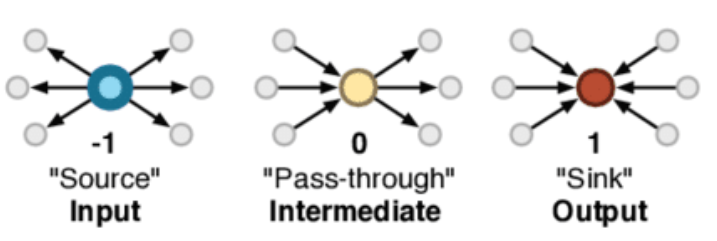
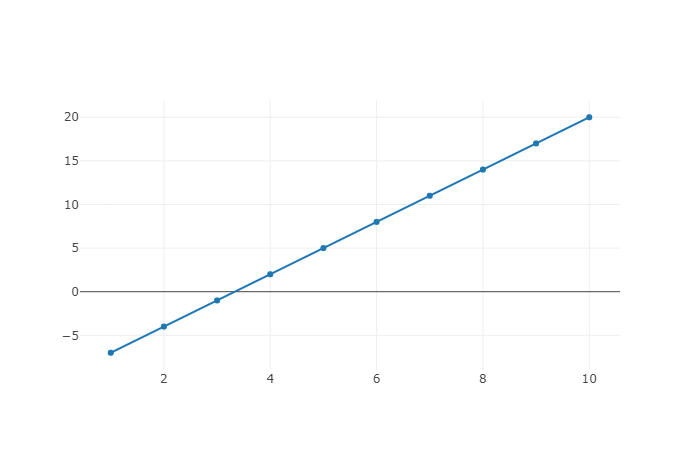

Netlab Lite is an online enviroment for modeling complex networks, designed and implemented by Sergi Valverde. Netlab was conceived to help students simulating the evolution of complex networks, using the programming language Wren, an elegant and simple scripting language (please check the Wren website for a detailed presentation of the language syntax). There are many different libraries and systems that can be used for this purpose. Netlab has a simple user interface (it uses the open-source libraries sigma.js and plotly for data visualization) and it does not require any software installation beyond the web browser. WebGL is required.
The system has four main built-in modules,
System, Net, Plot, and Random
which can be accessed from the scripting language. In the following we describe these basic Netlab modules and the functions they provide.
Net module is built directly into the system and it is always imported.
You don't need to import anything to use it. This module allows the user to create, manipulate and visualize
the network object in the left window.
This creates and visualizes the network defined by the adjacency list encoded in the string edgelist.
Notice that the previous network (if any) will be erased. As an example, the following script creates a
simple star network consisting with six nodes:
var e = "1 2
1 3
1 4
1 5
1 6"
Net.fromEdgeList(e)
Click here to load this code in Netlab.
To visualize the network click the 'run' button.
This creates an empty network with num_nodes nodes and no links or edges. Nodes are indexed by a number between 1 and num_nodes.
Sets an undirected edge connecting the pair of nodes with valid indexes a and b. The following script combines the methods create and addEdge to implement the random graph model.
var n= 100
var p = 0.02
var r = Random.new()
Net.create(n)
for (i in 1..n) {
for (j in 1..n) {
if ( r.float()< p) {
Net.addEdge(i,j)
}
}
}
Click here to load this script into Netlab.
To visualize the random graph click the 'run' button. Notice that the built-in Random module (see here for details) is used to generate random real numbers between 0 and 1. There is no need to import the module.
Sets a directed link between the pair of nodes a and b.
Net.size() return true if there is a link from node a to node b or false, otherwise.
Chooses one random link (or none if the network is empty) and returns a list with the indexes of the pair of connected nodes. The following script combines the Net and Random
modules to implement the preferential attachment model.
var n=100
Net.create(n)
for (a in 1..4) {
for (b in 1..4) {
Net.addLink(a,b)
}
}
var r = Random.new()
for (i in 5..n) {
for (k in 1..r.int(1,3)) {
var e = Net.sampleLink()
if (r.float()<0.5) {
Net.addLink(i,e[0])
} else {
Net.addLink(i,e[1])
}
}
}
Click here to load this script in Netlab.
Net.size() returns the number of nodes or network size.
Returns the list of nodes attached to the node having index index. The following example finds and prints the list of nodes attached to the hub node in a star network.
var e = "1 2
1 3
1 4
1 5
1 6"
Net.fromEdgeList(e)
System.print(Net.neighbors(1))
Click here to load this script in Netlab.
When the 'run' button is pressed, Netlab outputs the list [6,5,4,3,2].
Net.size() returns the number of nodes or network size.
Returns the degree or number of neighbors attached to the node with index index. This value corresponds to the length of the list returned by the method Net.neighbors(index) (see above).
Returns the degree sequence of the network. The degree sequence is the list of vertex degrees.
For example in the star network with 6 nodes, this method returns the list [0,5,1,1,1,1,1]. List indexes in the
programming language Wren start at zero.
This method assigns the arbitrary value of 0 to the first element of the returned sequence because it does not
map any network node.
Net.nLinks() returns the number of links in the network.
Computes the average path length of the network, or the mean number of steps along the shortest paths for all possible pairs of nodes. This is a measure of the efficiency of information, energy or matter flow on a network.
Computes the global efficiency, i.e., the mean harmonic distance, of the network. This is a measure of the efficiency of information, energy or matter flow on a network.
Computes the structural entropy of the network. For a directed network, the structural entropy of the network is the entropy of node spins, i.e., the difference between their (normalized) in-degree and out-degree (see below). This is a measure of network diversity, which is closely linked to the presence of multiple layers of complexity.

System module is built directly into Wren and it is always imported (see
here for more details). You don't need to import anything to use it.
Prints object to the console followed by a newline. If not already a string, the object is
converted to a string by calling toString on it. The following script
computes the average degree of the network and prints it to the console.
var e = "1 2
1 3
1 4"
Net.fromEdgeList(e)
var mean_k = Net.nLinks()/ Net.size()
System.print("Mean degree= "+ mean_k.toString)
Click here to load this code in Netlab.
Plot module is built directly into Netlab and it is always imported.
You don't need to import anything to use it. This module allows the user to make line chart.
To view these charts open the 'Plot' tab in the right panel.
Plots a line chart encoded in the data parameter. This parameter is a map object
holding two keys, "x" and "y", mapping the list of x- and y-coordinates,
respectively. Check the following script generating a very simple line chart.
var x = []
var y = []
for (i in 1..10) {
x.add(i)
y.add(3*i-10)
}
Plot.plot({"x":x, "y":y})
Click here to load this script into Netlab.
Press the 'run' button and then open the 'Plot' tab above. The outcome should be like this:
